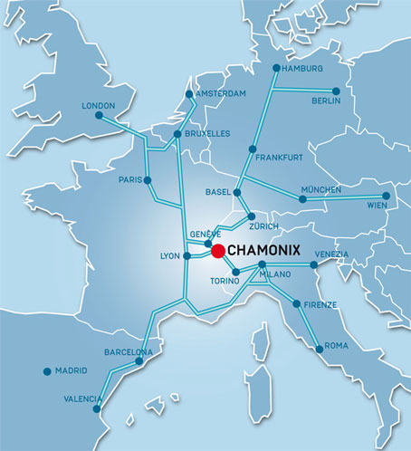
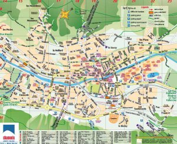

Chamonix Local Information
{kind=link}
Chamonix is situated in France in the north-westerly part of the Alps, just 15 km from the Swiss border via the Col des Montets and 15 km from Italy via the Mont-Blanc tunnel. The natural border, where these three countries converge, lies at 3820 meters on the summit Mont Dolent.
Chamonix and its valley are dominated by the Mont Blanc chain to the south and the Aiguilles Rouges (red peaks) to the north. The valley is of glacial origin and measures 17 km, from the Col des Montets at the northernmost point to the Taconnaz torrent. The town centre is situated at an altitude of 1035 metres, the highest village at the top of the valley is Le Tour (1462 metres).
The resident population of Chamonix is approximately 10,000 inhabitants. The number of visitors fluctuates enormously during the tourist season, in Summer up to 100,000 visitors per day and in Winter around 60,000.
You can check the Travelling to Chamonix webpage for detailed information on how to come to Chamonix.
Conference Center
The conference will be held at the "Le Majestic" congress center (Centre des Congrès - Le Majestic) in Chamonix, France. You can check the congres center website here.
Congress center location information:
241 Allée du Majestic,
74400 Chamonix.
Larger map

Chamonix Map
Click on the map on the left to download a PDF version of the town map. The conference center "Majestic Congrès" is located in E18.
Weather & Time
Chamonix is in the Central European Summer Time zone (CEST), as most of Western Europe.
Details on Chamonix weather and seasons can be found at Bigfoot Chamonix website.
Currency
Local currency is Euro
Visiting Chamonix
You should check the Chamonix valley and Mont-Blanc massif official website for additional information about visiting Chamonix, including local transportation in the Chamonix Valley, sports and mountain activities, as well as local entertainment and exhibitions.